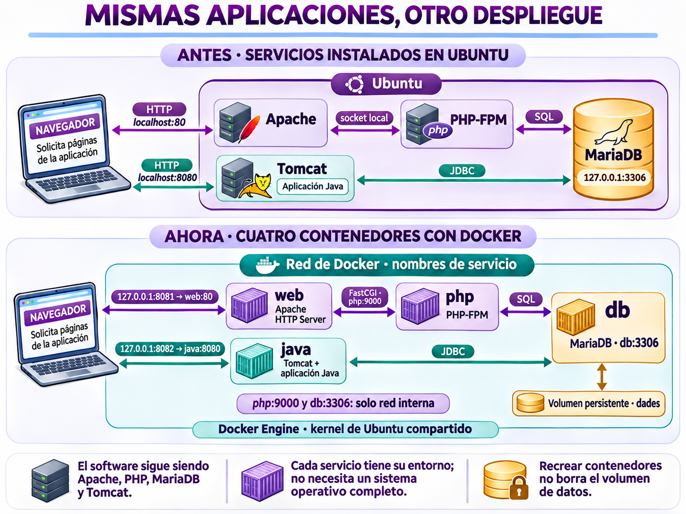

AEA2 · Reproducir el despliegue
6. Contenedores y Docker
La aplicación ya funciona. Ahora necesitamos repetir su entorno sin configurar cada servicio desde cero.
1. «Funciona en mi ordenador» no es suficiente
Instalar Apache, PHP-FPM, MariaDB y Tomcat nos ha permitido comprender qué necesita la aplicación. Al repetirlo en otro equipo aparecen diferencias: versiones, extensiones, rutas, cuentas y configuraciones. Copiar solo el código no reproduce el entorno.
Un contenedor ejecuta procesos con un entorno de archivos, dependencias y recursos aislado. Una imagen define ese entorno; la configuración de ejecución añade puertos, variables y almacenamiento. Docker nos permite construir, distribuir y ejecutar esos contenedores.
Idea clave
Docker no sustituye Apache, PHP ni Java: los ejecuta dentro de un entorno definido. Seguimos necesitando configurar, probar, actualizar y conservar los datos.
2. Instalación directa, máquina virtual o contenedores
«Local» indica dónde ejecutamos algo, no cómo lo aislamos. Podemos ejecutar contenedores en nuestro portátil, en un servidor físico o dentro de una máquina virtual en la nube.
| Opción | Qué contiene | Ventaja | Coste o límite |
|---|---|---|---|
| Instalación directa | Servicios y dependencias en el sistema anfitrión. | Acceso directo a servicios y herramientas del sistema. | Configuración manual y posibles conflictos de versiones. |
| Máquina virtual | Sistema invitado con su propio kernel, sobre un hipervisor. | Aislar un sistema completo o ejecutar otro sistema operativo. | Más memoria, almacenamiento y mantenimiento del sistema invitado. |
| Contenedores Linux | Procesos y entorno de archivos aislados que comparten un kernel Linux. | Recrear servicios a partir de imágenes y configuración. | No son una VM completa ni un aislamiento absoluto. Importan permisos, arquitectura CPU y almacenamiento. |
¿Dónde instalamos Docker en nuestra práctica?
Trabajamos directamente en nuestros ordenadores con Linux. Docker Engine es el motor que
crea y ejecuta los contenedores: lo instalamos como un servicio del sistema y lo utilizamos desde la
terminal con el comando docker.
Los contenedores utilizan el kernel del Linux instalado en el ordenador. Cada uno tiene su entorno de archivos y procesos aislado, pero no instala ni arranca un sistema operativo completo. Las máquinas virtuales aparecen en la comparación para entender la diferencia.
Realizamos las pruebas desde el navegador del mismo ordenador: localhost o
127.0.0.1 identifica nuestro equipo, y el puerto publicado permite acceder al servicio del
contenedor.
¿Y qué es Docker Desktop?
Docker Desktop es un producto que reúne el motor de contenedores, herramientas y una interfaz gráfica. En macOS y en Windows necesita un entorno Linux para ejecutar contenedores Linux: en macOS utiliza una VM Linux; en Windows puede utilizar WSL 2 o Hyper-V. Esa infraestructura la gestiona Desktop.
En nuestra práctica
Instalaremos Docker Engine y el plugin Compose directamente en nuestro Linux. Los comandos del encargo están preparados para Ubuntu; quienes utilicen Fedora deben seguir su procedimiento de instalación específico. Compose nos permitirá gestionar juntos los cuatro servicios. Docker Desktop también existe para Linux, pero no lo necesitamos para este despliegue.
3. Las piezas que debes distinguir
| Pieza | Función |
|---|---|
| Imagen | Plantilla de archivos y configuración base. No es una aplicación que ya esté ejecutándose. |
| Contenedor | Instancia creada desde una imagen. Puede arrancarse, detenerse, eliminarse y recrearse. |
| Dockerfile | Receta para construir una imagen: base, extensiones, código y configuración. |
| Compose | Archivo que describe servicios, redes, puertos, variables y volúmenes; una herramienta gestiona su ciclo de vida. |
| Registro de imágenes | Distribuye imágenes, por ejemplo Docker Hub. Elegimos imágenes oficiales y versiones identificadas. |
| Puerto publicado | Conecta un puerto del ordenador con el puerto del servicio en el contenedor. |
| Bind mount | Hace visible una carpeta del anfitrión dentro del contenedor. |
| Volumen | Almacenamiento gestionado por Docker con ciclo de vida separado del contenedor. |
Imagen, configuración y datos son piezas diferentes. Un volumen no convierte automáticamente los datos en una copia de seguridad. Las etiquetas de imagen pueden actualizarse: hay que registrar las versiones usadas y comprobar compatibilidad.
4. Cambia el despliegue, no la aplicación

127.0.0.1:8081:80 significa «puerto 8081 de mi ordenador → puerto 80 del contenedor». Apache
sigue escuchando en 80 dentro de web. Dos contenedores pueden usar el mismo puerto interno si publican
puertos distintos en el anfitrión.
Localhost depende de quién conecta
Dentro de php, localhost es php; no es MariaDB ni Ubuntu. PHP se conecta a db:3306. Apache se comunica con FPM en php:9000 mediante FastCGI. El navegador utiliza 127.0.0.1:8081 o 127.0.0.1:8082/tornejos/, no los nombres internos.
5. ¿Por qué cuatro contenedores?
Elegimos separar cuatro responsabilidades. Así podemos actualizar una imagen, reiniciar un servicio o buscar su fallo sin reconstruir todo el entorno.
| Servicio | Qué ejecuta | Conexiones y datos |
|---|---|---|
| web | Apache: archivos estáticos y recepción de HTTP. | 8081 del anfitrión → 80. Encarga PHP a php:9000. |
| php | PHP-FPM con pdo_mysql y el código del portal. | Consulta db:3306. No publica un puerto al anfitrión. |
| db | MariaDB, esquema y datos del laboratorio. | 3306 solo en la red Docker. Datos en volumen dades. |
| java | Tomcat, JVM y WAR de gestión. | 8082 del anfitrión → 8080. Consulta y actualiza db:3306. |
No es una obligación universal de un proceso por contenedor: Apache y FPM crean varios procesos de trabajo; Tomcat incluye la JVM y la aplicación. También existen imágenes que agrupan Apache y PHP. Aquí separamos servicios para comprender sus límites y configurar las conexiones explícitamente.
El Apache y Tomcat instalados en Ubuntu pueden seguir activos en 80 y 8080. El nuevo MariaDB del contenedor tiene sus propias cuentas y datos: no utiliza automáticamente la base nativa aunque se llame igual.
6. Arranque, configuración y persistencia
Compose sustituye valores de .env donde se referencian. Solo llegan al contenedor si los
pasamos mediante su configuración. Los Dockerfile copian archivos a las imágenes: editar el original no
modifica una imagen ya construida.
- Descargamos o construimos imágenes.
- Compose crea red, volumen y contenedores.
- MariaDB inicializa tablas y cuentas si el volumen está vacío.
- Un healthcheck comprueba disponibilidad básica; después arrancan los consumidores.
- Probamos el comportamiento real: que un contenedor esté arrancado no demuestra que el esquema y las credenciales sean correctos.
Detener no es eliminar. docker compose down elimina los
contenedores y la red del proyecto, pero conserva el volumen con nombre. Con up se recrean
y reutilizan sus datos. down -v elimina también los volúmenes del proyecto: no se utiliza para
probar persistencia.
Los scripts iniciales no se repiten al reiniciar una base ya inicializada. Cambiar .env tampoco cambia por sí solo contraseñas que ya existen en MariaDB. Si copiamos código mediante COPY, hay que reconstruir la imagen correspondiente.
7. Del ordenador al servidor
Los mismos archivos pueden utilizarse en un servidor Linux o una VM en la nube con Docker, adaptando secretos, arquitectura y acceso. Contenedor y nube no son sinónimos. Ejecutarlo en local no demuestra el despliegue remoto; esa comprobación se documenta cuando lo trasladamos a un servidor autorizado.
Abrir encargo 5 · Despliegue en contenedores